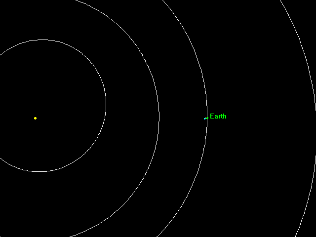

40년 짜리 알람
유머 / 감동
작성자: 안개비(shemom)
작성일: 2014-09-19 09:37:00
1： 지금으로부터 11년전인 2002년, 한 명의 아마추어 천문학자가 우주에서 표류하는 불가사의한 물체를 발견했다.
그 물체는 지구저궤도 상에 존재했으며, 「이, 이럴 수가! 달 말고도 지구 주변에 존재하는 물체가 있었다니……!」라고 연구자들은 다들 깜짝 놀랐다고 한다.
이 미지의 물체는 「J002E3」란 이름이 붙었으며, 한동안 운석이나 소행성 등으로 생각되어졌으나, 곧 의외의 사실이 드러난다. 「이, 이건…… 인공적인 물체다……!!」라고. 이번엔 그런 J002E3의 움직임이 한 번에 알 수 있는 GIF 애니메이션을 소개하고 싶다.
aa
댓글 0